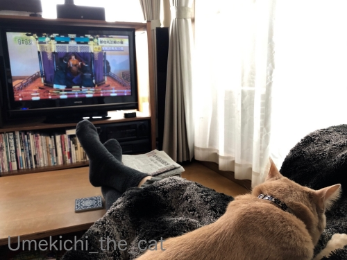
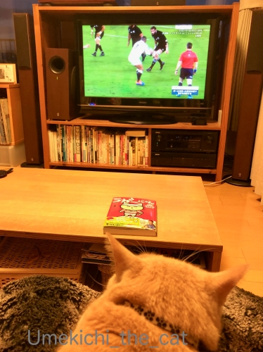
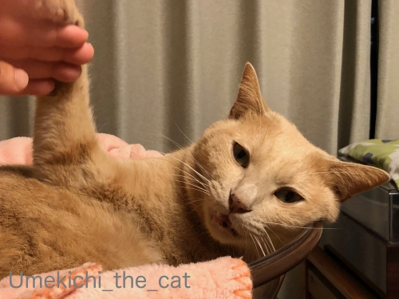
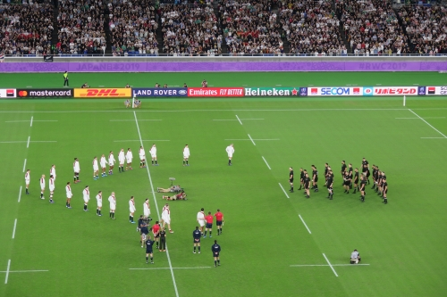
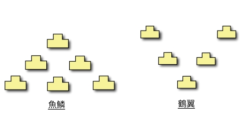
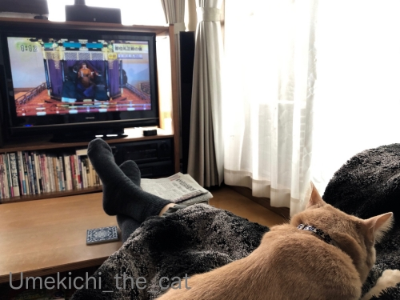
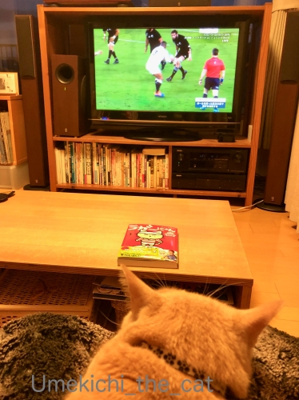
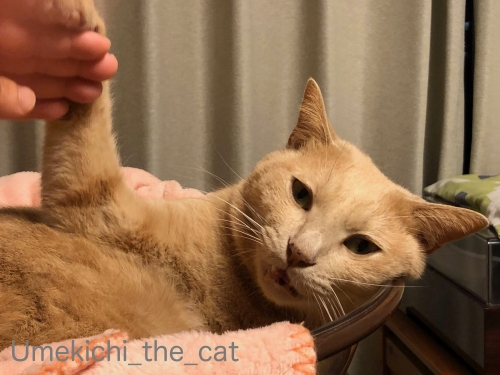
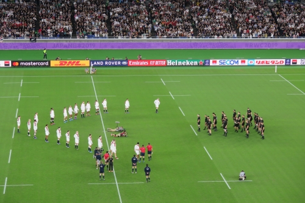
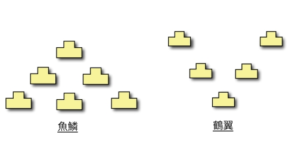

不平不満が顔にでる猫 [梅吉]
最近続いた歴史的出来事の瞬間。
即位礼正殿の儀の時も（令和元年10月22日火曜日 友引）
【注意】私の足がローテーブルの上に乗っているのは梅吉が膝にいるからです。
お行儀悪くてｽﾐﾏｾﾝ・・・
でも！こうやって足を伸ばしていないと梅吉が落ちそうになるのです。
決していつもこんな風ではありません。
と、言い訳が長い（爆）

イングランドがオールブラックス を打ち破った時も

お膝でちゅうちゅう( ´艸｀)
日常において100%自由で大体ご機嫌で楽しそうな梅吉さんですが
不平不満ははっきりとお顔に出ますよ！

ブラッシング中、あたま首回りは喉をぶるぶる鳴らして「良きに計らえ」なんですが
おちりに近づくにつれてお口がお怒りモード。
（5秒 音無です＾＾）
お目目も三角になってて相当怖いですけどね(*>艸<)
時々この怒ったお口のままでブラシする私を見てて笑えますwww
 ↑ガブッと一押し↑
↑ガブッと一押し↑
26日土曜日のラグビーW杯、イングランドvニュージーランド。驚きの結果でした。

いつもは巨大な黒い塊が吠えてるように感じるオールブラックスのハカ：ウォー・クライですが
この時は小さく心許なく見えました。
準々決勝、アイルランド戦の時のハカ、
アイルランドファンの歌う「アイルランズ・コール」にハカの声がかき消されたのですが・・・
それでも動じなかったオールブラックスがイングランドの無言の「V字」に圧倒された。
初めて見たオールブラックスの動揺。
イングランドの「V字」、Bossさんが記事にされていましたが「武田八陣形」と同じだそうです。
戦国時代や兵法にはめっぽう弱いのでググってみました。

（画像はウィキペディアよりお借りしました）
左の「魚鱗：ぎょりん」がオールブラックス。
右の「鶴翼：かくよく」がイングランドなんですねー。すごいすごい！！
洋の東西を問わず人間の考えることって結局似ていたりします。
西洋の戦法にも似たものがあるのでしょうか。
一体イングランドの誰がこの「V字」に着目したのか知りたいところです。
ちなみに私は「V」はvictoryのVかな？と受け取りましたよ＾＾
そしてイングランドがニュージーランドを囲む様に立つ図、を
大英帝国が先住民族を威圧して植民地化していく図・・・に当て嵌めて見てしまいました。
大英帝国時代の植民地政策を批判するつもりは微塵もありませんけど
なんだか両国の不思議な因縁？だなぁと感じた次第です。
今後、この両チームが戦う時にはこの「ハカ」VS「V字」が伝統になるのかしら。
ところで、オールブラックスのキャプテン、キーラン（キアラン）・リードはこのW杯後
日本のトヨタ自動車ヴェルブリッツに所属することが決まってます。
試合後の目の周りが血だらけのインタビューが記憶に新しいのではないでしょうか。
俳優のレイフ・ファインズに似た男前です！
同じくオールブラックス監督のスティーブ・ハンセンもトヨタの監督就任！？
（エディが口を滑らせたwww）
なんてニュースが聞こえてきて日本のトップ・リーグも盛り上がってきそうです＾＾
今夜は南アフリカvウェールズ。
今の心境は南アフリカ応援モードですが
ウェールズvイングランドのUK対決の決勝も捨て難いわぁぁぁぁぁぁ。
ラグビーW杯日本大会、色々な意味で歴史に残る大会になりそうな予感です！
即位礼正殿の儀の時も（令和元年10月22日火曜日 友引）
【注意】私の足がローテーブルの上に乗っているのは梅吉が膝にいるからです。
お行儀悪くてｽﾐﾏｾﾝ・・・
でも！こうやって足を伸ばしていないと梅吉が落ちそうになるのです。
決していつもこんな風ではありません。
と、言い訳が長い（爆）

イングランドがオールブラックス を打ち破った時も

お膝でちゅうちゅう( ´艸｀)
日常において100%自由で大体ご機嫌で楽しそうな梅吉さんですが
不平不満ははっきりとお顔に出ますよ！

ブラッシング中、あたま首回りは喉をぶるぶる鳴らして「良きに計らえ」なんですが
おちりに近づくにつれてお口がお怒りモード。
（5秒 音無です＾＾）
お目目も三角になってて相当怖いですけどね(*>艸<)
時々この怒ったお口のままでブラシする私を見てて笑えますwww
26日土曜日のラグビーW杯、イングランドvニュージーランド。驚きの結果でした。

いつもは巨大な黒い塊が吠えてるように感じるオールブラックスのハカ：ウォー・クライですが
この時は小さく心許なく見えました。
準々決勝、アイルランド戦の時のハカ、
アイルランドファンの歌う「アイルランズ・コール」にハカの声がかき消されたのですが・・・
それでも動じなかったオールブラックスがイングランドの無言の「V字」に圧倒された。
初めて見たオールブラックスの動揺。
イングランドの「V字」、Bossさんが記事にされていましたが「武田八陣形」と同じだそうです。
戦国時代や兵法にはめっぽう弱いのでググってみました。

（画像はウィキペディアよりお借りしました）
左の「魚鱗：ぎょりん」がオールブラックス。
右の「鶴翼：かくよく」がイングランドなんですねー。すごいすごい！！
洋の東西を問わず人間の考えることって結局似ていたりします。
西洋の戦法にも似たものがあるのでしょうか。
一体イングランドの誰がこの「V字」に着目したのか知りたいところです。
ちなみに私は「V」はvictoryのVかな？と受け取りましたよ＾＾
そしてイングランドがニュージーランドを囲む様に立つ図、を
大英帝国が先住民族を威圧して植民地化していく図・・・に当て嵌めて見てしまいました。
大英帝国時代の植民地政策を批判するつもりは微塵もありませんけど
なんだか両国の不思議な因縁？だなぁと感じた次第です。
今後、この両チームが戦う時にはこの「ハカ」VS「V字」が伝統になるのかしら。
ところで、オールブラックスのキャプテン、キーラン（キアラン）・リードはこのW杯後
日本のトヨタ自動車ヴェルブリッツに所属することが決まってます。
試合後の目の周りが血だらけのインタビューが記憶に新しいのではないでしょうか。
俳優のレイフ・ファインズに似た男前です！
同じくオールブラックス監督のスティーブ・ハンセンもトヨタの監督就任！？
（エディが口を滑らせたwww）
なんてニュースが聞こえてきて日本のトップ・リーグも盛り上がってきそうです＾＾
今夜は南アフリカvウェールズ。
今の心境は南アフリカ応援モードですが
ウェールズvイングランドのUK対決の決勝も捨て難いわぁぁぁぁぁぁ。
ラグビーW杯日本大会、色々な意味で歴史に残る大会になりそうな予感です！

カフェオレ色の梅吉

梅吉 2023年8月10日 永眠


梅吉と出会った譲渡会

犬猫の理由なき殺処分ゼロ
妄想広告
UMEKICHI 光

爆発的に早い！
時々攻撃的！
Thanks to Mr.Boss365
爆発的に早い！
時々攻撃的！
Thanks to Mr.Boss365

梅吉さんお怒りモードになっても逃げたり噛んだりはしないのですね。良い子だわー。
by zombiekong (2019-10-28 01:58)
ニャン優先ですから
多少お行儀が悪くなってもしょうがないです＾＾
by ぽちの輔 (2019-10-28 06:15)
梅吉さまをお落とししないようにするためには必須の体勢かと^m^
梅吉さん、お怒りモードのお顔は、眉間にシワが寄っているように見えちゃいます。(寄ってないけど)
まだまだ穏やかの方ですよぉ。ガブっとしたり、ひっかいたりしてないですもん。
私もVictoryの「V」かと思ってました！
by ChatBleu (2019-10-28 06:32)
不満があっても口元がお怒りモードになるだけで
じっとしてらっしゃるなんて梅吉さん大人ですねぇ(°_°)
うちのニャンズは私が相手だと怒って逃げるか「シャー」って猫パンチを
繰り出すか・・・です(´･_･`)
梅吉さんが気持ちよく過ごせるためならば多少行儀が悪くなっても
下僕としては仕方ないですよねぇ( ^ω^ )
by ニッキー (2019-10-28 07:10)
梅吉さんお口がお怒りになっていますね！
でも我慢して耐えているのですね(^^)
by ma2ma2 (2019-10-28 08:54)
梅吉さんの三角お目目ｗ 面白くて何度も再生しましたｗ
おチリに近づくと、特に裏モモあたりは肉が薄いので痛いのでしょうか？
それで警戒モードになるのかなぁと(;^_^A
イングランドのV字のフォーメーションは、スタンドからの視覚効果を狙った
すごい戦略という気がしました。
「武田八陣形」ほほ～戦国武将にも通じるものがあるのですね！
それは大発見ですね（^^
by marimo (2019-10-28 10:08)
こんにちは。
ちぃさん、「言い訳が長い」ですが、さすが、足も長いですね（笑）
梅吉くん、常に膝上！！温かく快適な感じです。
ブラッシング、小生猫もお尻付近は警戒？パンチを繰り出します。不思議ですね。
オールブラックスのハカに対抗して「V字」やってくれましたね！！
海外では、賛否あるみたいですが、エンターテイメント性が高まり良い方向かな？
「武田八陣形」詳細・図解入りで解説分かりやすいです！！
W杯選手、続々とトップリーグに加入！！嬉しいですね。集客・人気が上がると期待！！
現代ラクビー にわかファンBoss365からの願いでもあります。
南アフリカが勝利、イングランドの戦術が楽しみです！？(=^･ｪ･^=)
by Boss365 (2019-10-28 12:09)
梅吉さん、ほんまにエエ子やわ～。
確かに三角お目目に「不満」がにじみ出ていますが、それでも暴れださない、そんな猫さんが存在する事実に驚きを隠せません^^;
長い言い訳、よくわかります！
お膝の上のニャンコを落とさないように、とんでもない姿勢になること多々あります(#^^#)
V字は迫力ありましたね！
「にわか」な私には、一方のチームだけが「ハカ」のような歌を歌って、もう一方は何もしないというのも変だなと思ってました。
なんですと～？？オールブラックスのキャプテンが日本のトップリーグへ？！
男前、どんどん日本へおいで～おいで～♪
この勢いでラグビーどんどん盛り上げて欲しいですね^^
by ゆきち (2019-10-28 12:28)
お膝の上に梅吉さん♪
これからますます梅吉さんと
くっつく日々ですねぇ～(#^.^#)
不平、不満（笑
お顔にはっきりと表れますね！
by きぃ (2019-10-28 12:36)
怒ったお口で何と訴えてるのでしょうか？（ﾟ□ﾟ）
by 英ちゃん (2019-10-28 17:48)
私も猫の下僕として仕えてます。
最近涼しくなり長時間お膝に乗って
痺れますが我慢しています。
by sally (2019-10-28 18:01)
梅吉さん、テレビ観戦はいつも一緒なのですね！
不満があっても我慢してる？いい子だわぁ～～＾＾
腰のあたりを触るのって好きな子と嫌いな子と分かれますよね。
ニュージーランドのハカが終わったらイングランドが応戦するのかと思ってみてました。このフォーメーションから踊るのかと‥＾＾；
by sana (2019-10-28 20:40)
梅吉さん、目が据わってる～！！^_^;
ネコさんたち、首元とか、脇とかコショコショしても気持よさそうにしてますが、くすぐったくないんでしょうかネ。^^;
by yes_hama (2019-10-28 21:34)
猫さんの不平不満な時はわかります。
私に対しての抗議だと思います。
よくある事なので、慣れています。
本当はスリスリして欲しい＾＾
by riverwalk (2019-10-28 22:04)
目は口程に物を言うですね(笑)
イングランドの「V字」は見てて鳥肌立ちました！
もしかするとエディが日本で学んだのかも・・・
by yamatonosuke (2019-10-29 00:54)
お口がお怒りモードになっても、じっとしているえらいぞ！梅吉さん。
by ニコニコファイト (2019-10-29 07:06)
ローテーブルに足を乗せるのは
お膝に猫が居れば当然です！(笑)
これは行儀が悪いとは言わないのよ〜^^
非国民なわたしは、結局W杯テレビで一度も見てなかったりする^^;
by リュカ (2019-10-29 10:18)
牙が・・・。
本当にお怒りモードですね。でも我慢している梅吉さん、最高です！
by kou (2019-10-29 19:21)
梅吉くん、おちり周りは自分の好きにさせてもらいたいみたいね(≧▽≦)
不満でもじっと耐えて男らしいです。
うちのへたれくん(タラオといいます)はガブしてくるので
小さなくしを手のひらに隠して、撫でているふりをしながら
とかしていますｗ
by emi (2019-10-29 19:50)
ちぃさん、梅吉ちゃん、こんばんは！！！！！
即位の礼でもラグビーでも、
ローテーブルでの梅吉ちゃんとちぃさんのスタイルは日常的な必要不可欠なものであり、うちもローじゃないテーブルに同じような態勢で毎日ネコたちを抱えております＾＾テーブル上にあがったわたしのアシにひっついてるネコを落としてアシも落としてっていうわけにはいきませんよー(笑)
動画を観ました。梅吉ちゃん、ほんとに顔に出るんですね('ω')ノ
かわいったらありゃしない。猫って表情にちゃんと出るのでわかりやすいです。
ラグビー、テレビ画面にひっついている人間は我が家に一人いるのですが、私はネコ仕事等でほとんど観てません、聴いてるだけです。日本が負けちゃったときだけは「あーーーー、(..)」って反応しました。不思議なことでラグビー(某ドラマな等も含め)見聞きしてると、サッカーがなんとなく迫力なくみえるのは、ここに書いて良かったのかな～。サッカーも好きです！！！
ご無沙汰してました。なんとか生きてます(汗)
by ake_i (2019-10-29 22:28)
お怒りモードでも耐えてるところなんだかナノと似てるかも(*^-^*)
by palpal (2019-10-30 09:42)
こんにちは。別件ですが・・・
「満月広場のハロウィン」の件了解しました！？(=^･ｪ･^=)
by Boss365 (2019-10-30 16:50)
梅吉さんいつも膝の上にいて
あったかそうですね。
寒くなってきたからでしょうか
イングランドの「鶴翼」
まじ喧嘩うってましたね
そりゅあーそうですよね
いつもハカやられっぱなしですから。
しかしどうやらイングランド、センターラインを
越したので罰金が科されたとか
そりゅーないよね・・・・
日本のラグビープロ化
うまくいくでしょうかね？
それよりもっと国際テストマッチを
条例化してほしいなぁ(#^^#)
by ぱだおくん (2019-10-30 19:14)
ニャンズはけっこう感情がわかりやすいですよねｗ
梅ちゃん、お怒りモードもかわゆいですよ❤
わざと怒らせてみたりしません？(しないか＾＾)
イングランドのＶ字戦法すごかったですね！！
そしてキャプテンの不適な笑みが何ともよかったです。
勝負は時の運とも言いますし、やってみないと
分からないですよね。勝ち続けることの大変さを
感じた試合でしたｗ
by カトリーヌ (2019-10-31 13:54)